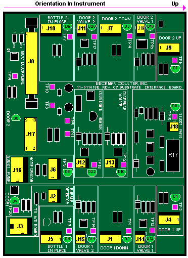
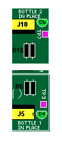
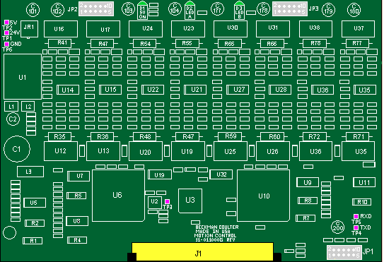

| Door does not close correctly.
|
- Insufficient air pressure or kinked air line.
- Door guides and edges contain splashed substrate causing the door to stick.
|
- Check air pressure and air lines. Verify that the regulator is set correctly to 20 psi.
- Remove the door. Clean the door and the door guides with water.
|
| Substrate drawer does not slide out smoothly.
|
- Substrate drawer and bottom of loader assembly contain splashed substrate causing the drawer to stick.
- Problem with the tray latch, either the latch is sticky with substrate or it is not operating correctly.
|
- Clean substrate drawer, drawer guide slots, and around and under the drawer.
- Inspect latch and clean or replace as required. If latch must be replaced, contact Technical Support.
|
- Substrate bottle is present, but
- system is showing substrate bottle not present.
- substrate door fails to close during loading.
- Substrate bottle is not present or present, but
- system is showing substrate bottle is present.
- substrate door fails to close during loading.
|
- Bottle optical sensor is defective or not operating correctly.
- Sensor has broken harness wire and sensor connector pin.
- Sensor is installed backward.
- Sensor is completely blocked by solid substrate material.
- Other electronics issue (PCB, ribbon cable, etc.)
- Substrate Interface PCB is defective or not operating correctly.
- PCB has broken sensor connection pin.
- PCB has short circuit or defective components.
- Substrate Interface PCB does not receive the 5 VDC to power the sensor.
- Ribbon cable connects to J8 is damaged or pinched.
- J8 connection on PCB is damaged or defective.
- MCC#6 PCB is defective and fails to send the 5 VDC power signal through the ribbon cable.
|
- Verify the optical sensor wire harness is properly attached or connected on Substrate Interface PCB, and sensor is correctly installed.
Note: Optical sensor is mounted on the sensor bracket. Sensor front side has to be flushed in the sensor bracket to align the screw. Sensor can be installed backward and sensor will be facing out.
Sensor Back and Front View
 
- Check sensor wire harness for damaged or broken wires.
- Check the sensor connector pins for damaged or broken pins.
- Check sensor if it is installed incorrectly or backward.
Replace the sensor if there are damaged or broken sensor pins or harness wires. If sensor is installed backward, reinstall it correctly with sensor facing in.
Note: If replacement is required, ensure to order the optical/reflective sensor not the mechanical arm sensor. Mechanical arm sensor is not compatible with the optical sensor bracket.
- Remove the sensor from the sensor bracket and check for blockage of substrate material or dust. Clean the sensor if necessary.
- Troubleshoot electronics.
- Verify the power of the sensor on the Substrate Interface PCB by using a meter.

- Turn the meter to measure VDC.
- Connect the black lead to ground TP9.
- Connect the red lead to one end of R6 or R15.

- Voltage should read ~ 5 VDC. If voltage is not reading ~ 5 VDC
- check the MCC ribbon cable connects to J8 for damages.
- check the J8 connection for damages.
If there are damages, replace the ribbon cable or Substrate Interface PCB.
- Verify the 5 VDC on MCC#6 PCB by using a meter.

- Turn the meter to measure VDC.
- Connect the black lead to ground TP6.
Note: Older revision of PCB, ground is TP3.
- Connect the red lead to TP2.
- Voltage should read ~ 5 VDC. If voltage is not reading ~ 5 VDC
- remove the MCC ribbon cable connects to J8 on Substrate Interface PCB or J74 on the MCC Back Plane PCB to see if the voltage recovers.
If 5VDC is recovered, replace the ribbon cable. If 5VDC is not recovered, replace the PCB.
- Verify connections on Substrate Interface PCB.
- Inspect the sensor connectors J5 and J10 on PCB for broken pins. Replace the PCB if there are broken pins.
- View the bottle sensor status in the user interface by selecting
. If the sensor detects a bottle, the Input Value on the screen is green. If test still fails after replace the sensor, then replace the Substrate Interface PCB.
|